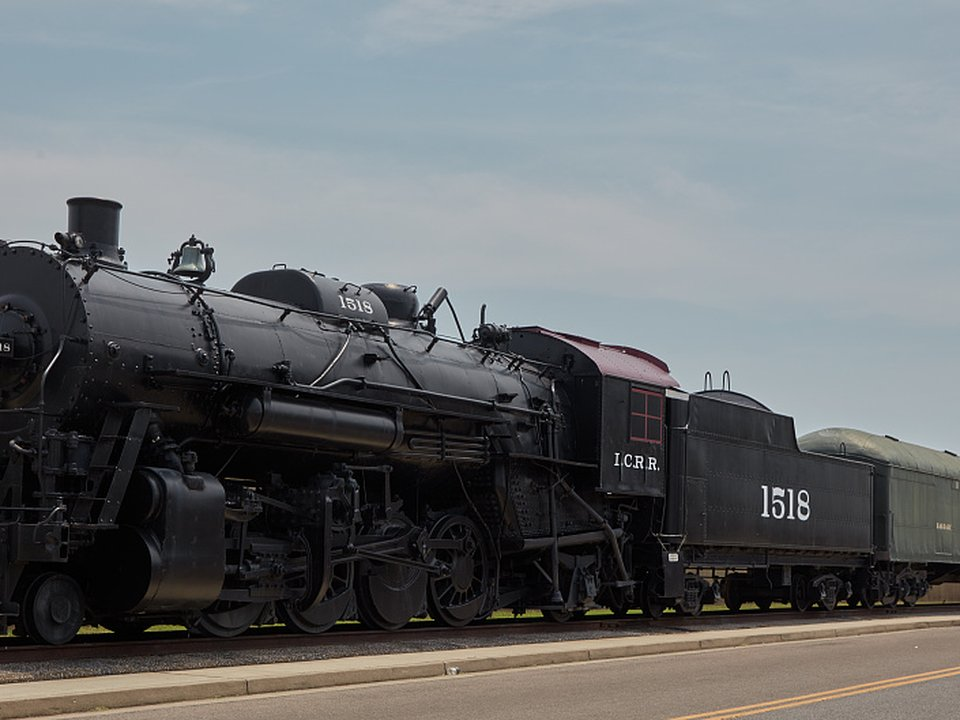

Downtown · Boutique
The 1857 Hotel
A boutique hotel in a historic downtown building.
Official details for The 1857 HotelA UNESCO Creative City on the Ohio River.
Paducah is a small river town with a big creative streak, named a UNESCO Creative City for crafts and folk art. See the National Quilt Museum, walk the floodwall murals that tell the town’s history, browse studios in the LowerTown Arts District and eat at the Freight House.

Time illustration: direct distance at 150 KTAS plus 15 minutes for departure and arrival, matching the discovery page. Use ForeFlight for your actual flight plan.
KPAH, Barkley Regional Airport, is a towered field about 15 minutes west of downtown.
Barkley Regional Airport, West Paducah, KY
Confirm FBO hours, fees and rental cars. No live fuel price is shown.
About 525 nm from Myrtle Beach: a long nonstop leg or a fuel stop.
Rates and availability need travel dates. QuiltWeek fills the town.
A boutique hotel in a historic downtown building.
Official details for The 1857 HotelA restored 1868 home near downtown.
Official details for The Belle Louise Historic Bed & BreakfastA cozy B&B near downtown.
Official details for Fox Briar InnReserve weekend dinners.
Elevated Southern and Midwestern cooking from local farms.
Official details for Freight HouseA historic bakery on Market House Square.
Official details for Kirchhoff’s Bakery & DeliSteaks and tamales from a Mississippi Delta classic.
Official details for Doe’s Eat PlaceAn easy, artful weekend.
This prototype links to the local visitor site. It does not yet match events to your travel dates.
A huge quilt show; book far ahead.
QuiltWeek for AQS QuiltWeekA big riverfront barbecue festival.
Visit Paducah for Barbecue on the RiverMild weather for walking.
Check the local calendar when choosing a weekend, and confirm dates and tickets with the organizer.
A sample weekend: quilts, murals and the river. No bookings or availability confirmed.
Land at KPAH mid-morning.
The National Quilt Museum.
The floodwall murals, then back to the FBO.
Land at KPAH, subject to weather and your actual flight plan.
Walk the floodwall murals.
Dinner at Freight House.
The National Quilt Museum.
LowerTown galleries.
Dinner downtown.
Kirchhoff’s, then the River Discovery Center.
Allow time at the FBO.
Summer storms build in the afternoon; leave early.
LowerTown galleries.
The River Discovery Center.
Dinner at Freight House.
These details make the difference between an appealing list and a usable getaway.
Lodging first, then dinners.
April brings tens of thousands of visitors.
About 525 nm. Check range and reserves or plan a fuel stop.
Spring and fall.
Picks and links reviewed by WingAway Weekends. Hours, prices, menus and availability change often, so confirm directly with each place before booking. Spotted something out of date, or have a favorite we missed? Email us at hello@wingawayweekends.com.
WingAway Weekends helps you discover the destination. Use ForeFlight and current official aviation information for route, performance, weather, NOTAMs and preflight decisions. Flight planning and PIC responsibility stay with the pilot.